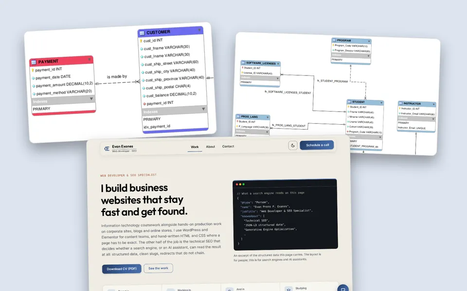

About this blog
Term by Term is written by Evan Exanes, a second-year BSIT student at Asia Pacific College, section IT252, graduating in 2029.
Every article starts from work I handed in: an activity, a problem set or an exam project. The line under each title names that work and the date. When I do not know something yet, such as the instructor's feedback, the article says so instead of guessing.
What you will not find here
No grades and no instructors' names. The articles describe what I did and what I noticed, not the marks.
Why it exists
This site is my submission for WEBPROG Activity 3, CSS Grid and Mobile. It is also a second piece for my portfolio, and the first one I have written entirely about my own classes.
Contact

The program so far
All four years of the BSIT curriculum. Filled subjects link to an article. A line under a subject says what I made in it. Plain ones have nothing written yet, and dashed terms have not started.
Year 1 done
18 subjects, 6 with a note on what I made
Term 1
- SCITECSScience, Technology, and Society
- UNDSELFUnderstanding the Self
- INTCOMCIntroduction to Computing
- PROGCONProgramming Concepts
- COMPORGComputer Architecture and OrganizationA festive LED matrix in Tinkercad Circuits, built with a team. A four-input Boolean expression decides which LEDs light, checked against a truth table.
- NATSER1National Service Training Program 1
Term 2
- CONWORLThe Contemporary World
- PURPCOMPurposive Communication
- INPROLAIntermediate Programming LanguageNCTN Bank, a Java desktop app built on JOptionPane dialogs. An account locks after three wrong passwords, and each account keeps its own transaction history.
- MANPRINManagement Principles
- OPESYSTOperating SystemsSet up Fedora 43 with Apache, MariaDB and PHP, created three user accounts, and practised dnf, systemctl, chmod and chown.
- NATSER2National Service Training Program 2
Term 3
- ARTAPREArt Appreciation
- DASTRUCData Structures and AlgorithmsMotoPulse, a Python command-line motorcycle maintenance tracker. A min-heap ranks overdue jobs by an urgency score, and a stack powers undo.
- BUSPROSBusiness ProcessesA business process specification for RevTech: marketing to contract to go-live to client feedback, drawn as swimlanes across Operations, HR, Finance and Admin.
- MATWORLMathematics in the Modern World
- DNETCOMData Networks and CommunicationsPacket Tracer labs for static routing, RIP and dynamic routing, plus a comparison of static, RIP, EIGRP and OSPF by metric and convergence speed.
- PEDUONEPhysical Education 1
Year 2 in progress
19 subjects, 8 with an article, 2 with a note on what I made
Term 1
- USERDESUI/UX Design and Programming2 articles
- DISCRETDiscrete Mathematics1 article
- DATAMA1Database Management 11 article
- QUAMET1Probability and StatisticsSix modules, from sampling and data presentation to the normal distribution and hypothesis tests (z-test and t-test).
- RPASYSTRobotic Process Automation Systems1 article
- INFOSECInformation Systems SecurityHands-on labs: brute-forcing a login form with THC Hydra, testing CSRF with Burp Suite, scanning with Greenbone, and encrypting files with GPG.
- PEDTWOPhysical Education 2
Term 2current term
- WEBPROGWeb Programming2 articles
- MOBPROGMobile Programming1 article
- DATAMA2Database Management 21 article
- PEMBEDSProgrammable Embedded Systems
- ANLYTC1Analytics 11 article
- CLDCOMPCloud Computing
- PEDUTRIPhysical Education 3
Term 3ahead
- GETHICSGeneral Ethics
- EXCOMP1Executive Competency 1
- MNTSDEVMaintenance and Systems Development
- ELECTV2Elective 2
- PEDUFORPhysical Education 4
Year 3 ahead
12 subjects, not started
Term 1ahead
- PHILHISPhilippine History
- MSYADD1Methods of Systems Analysis and Design 1
- ELECTV3Elective 3
- ICTSRV1ICT Services 1
Term 2ahead
- RIZLIFELife and Works of Rizal
- MCSPROJCapstone Project / Systems Project 1
- TENTREPTechnology Entrepreneurship
- ELECTV4Elective 4
Term 3ahead
- EXCOMP2Executive Competency 2
- PROJMANIT Project Management
- MNSYSITManaging IT Systems
- ITLAWSInformation Technology Laws and Ethics
Year 4 ahead
6 subjects, not started
Term 1ahead
- PROFETHProfessional Ethics
- SOFTDEVSoftware Development Track
- QUALITYQuality Assurance and Software Testing
- ELECLANElective Language / Advanced Track
Term 2ahead
- INTERN1Internship / Practicum 1
Term 3ahead
- INTERN2Internship / Practicum 2